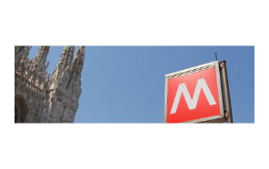

M3 Milano

Sin dal 2004 i professionisti di Swing:It hanno sviluppato e gestito la piattaforma di Tele Video Controllo Camere (TVCC) a supporto del sistema di guida senza conducente e di gestione dell'accesso alle stazioni e ai treni della Linea 3 della Metropolitana Milano. Diverse volte, l'ultima nel periodo 2010/2011, sono stati realizzati ampliamenti del sistema TVCC esistente per il committente ATM Milano - Linea 3.
La soluzione Swing:It per il TVCC integra ErgoVU Factory Information Portal e l'ambiente di sviluppo integrato per il linguaggio di programmazione visuale/Java VIB Laces (adesso MI Studio) prodotti entrambi da ErgoTech Systems Inc. Le animazioni attive prodotte da tale framework sono state inserite in un portale di sistema che consente l'interazione totalmente automatizzata tra l'utente e il sistema integrato di TVCC per mezzo di Human-Machine Interfaces grafiche.
Tale sistema permette l'inserimento di programmi personalizzati di acquisizione e analisi dati, controllo di processi, generazione di rapporti o più generalmente per tutto ciò che concerne l'automazione industriale, su piattaforme Windows, Linux, Mac OS e controllori dei più svariati produttori internazionali.
Swing:It offre ai propri clienti soluzioni di controllo e automazione industriale basate su tali tecnologie, supporto SECS/GEM, supporto a impianti di produzione basati su catene di montaggio, trasporto sospeso, etc. Con le medesime tecnologie l'azienda ha supportato aziende farmaceutiche, automobilistiche, dei semiconduttori, di distribuzione di acqua potabile, etc.